cork-passport-holderCORK-PASSPORT-001
Long: Eco-friendly cork passport holder ideal for travel lovers and sustainable lifestyles. Protects passports while offering a stylish and eco-conscious design.
Long: Cork Passport Holder has natural cork and leather recorded in the catalog. The photo shows an open holder with a passport and card slots. It can bring travel documents together for a company trip or a travel-themed gift. Check the actual passport fit and card capacity before ordering a group quantity.
Meta: Natural cork and leather passport holder with visible card slots. Consider it for travel documents or a company travel gift; confirm fit before ordering.
.webp)
Proposed alt: Open cork passport holder with passport and card slots
Approval: NO
metal-ring-keychainKEYCHAIN-RING-METAL
Long: Durable metal ring keychain suitable for brand promotions, event giveaways, and employee welcome kits.
Long: Metal Ring Keychain pairs a round key ring with a shaped silver-tone tag in the primary image. The catalog records stainless steel and a standard size. Its compact format suits a small event giveaway or a component in an employee welcome pack. Confirm the available marking area and method before approving artwork.
Meta: Silver-tone keychain with round metal ring and shaped tag. Stainless steel is recorded; confirm branding details for a bulk order.
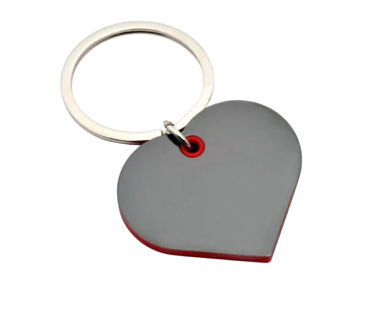
Proposed alt: Silver-tone shaped keychain with round ring and red edge
Approval: NO
cork-dining-table-matCORK-SD-TABLEMAT
Long: Eco-friendly cork dining table mat designed to protect surfaces while adding a natural and sustainable touch to dining spaces. Ideal for homes, cafés, restaurants, and eco-conscious interiors.
Long: Cork Dining Table Mat places a textured cork surface beneath plates and tableware. The primary image shows a rectangular mat in a dining setting, while the catalog records natural cork. It can be considered for a home dining table or hospitality presentation. The record gives no dimensions, so confirm coverage before placing a quantity order.
Meta: Rectangular natural-cork dining mat shown with tableware. Confirm the mat dimensions before planning a table setting or bulk order.
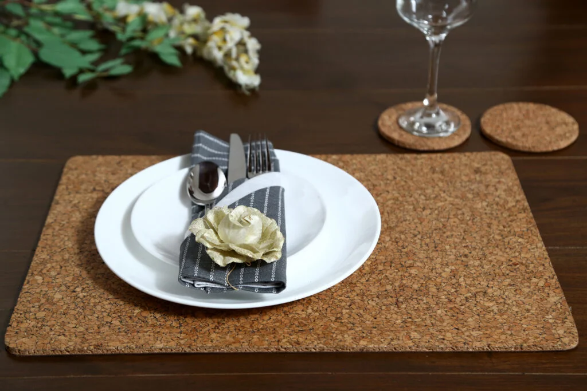
Proposed alt: Rectangular cork dining mat beneath a place setting
Approval: NO
executive-a5-pu-leather-diaryEXECUTIVE-DIARY
Long: Premium A5 PU leather diary with ruled pages, bookmark ribbon, and elegant finish. Perfect for corporate gifting, CEO kits, and brand promotions.
Long: Executive A5 PU Leather Diary is a compact writing format for meetings or a welcome kit. The catalog identifies an A5 size, brown color and PU-leather material. The primary image shows a closed, logo-positioned cover; ruled pages and a bookmark ribbon are not established by that photo. Confirm the inside layout before describing those features.
Meta: Brown A5 diary with a PU-leather cover. Confirm page ruling and internal features before adding them to a corporate gift specification.
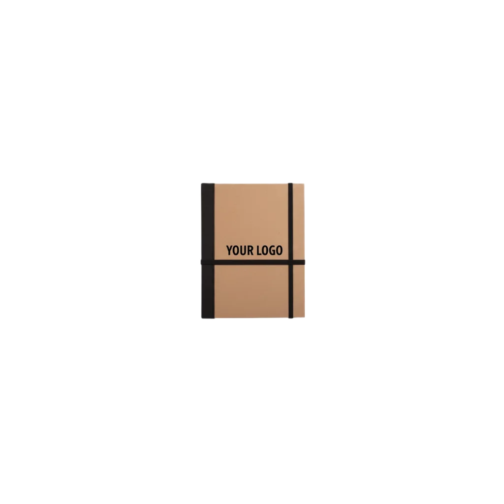
Proposed alt: Closed brown A5 diary with sample logo area
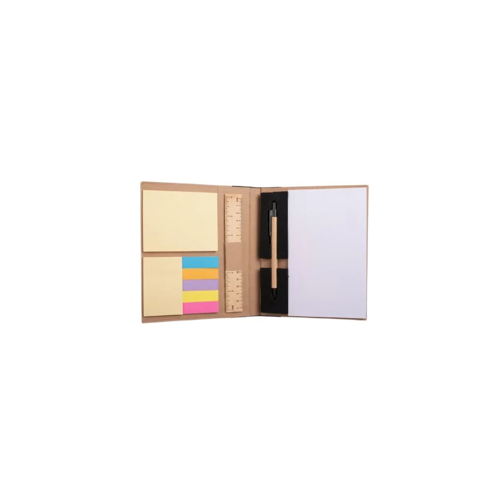
Proposed alt: Open brown diary with inner pages and colored tabs
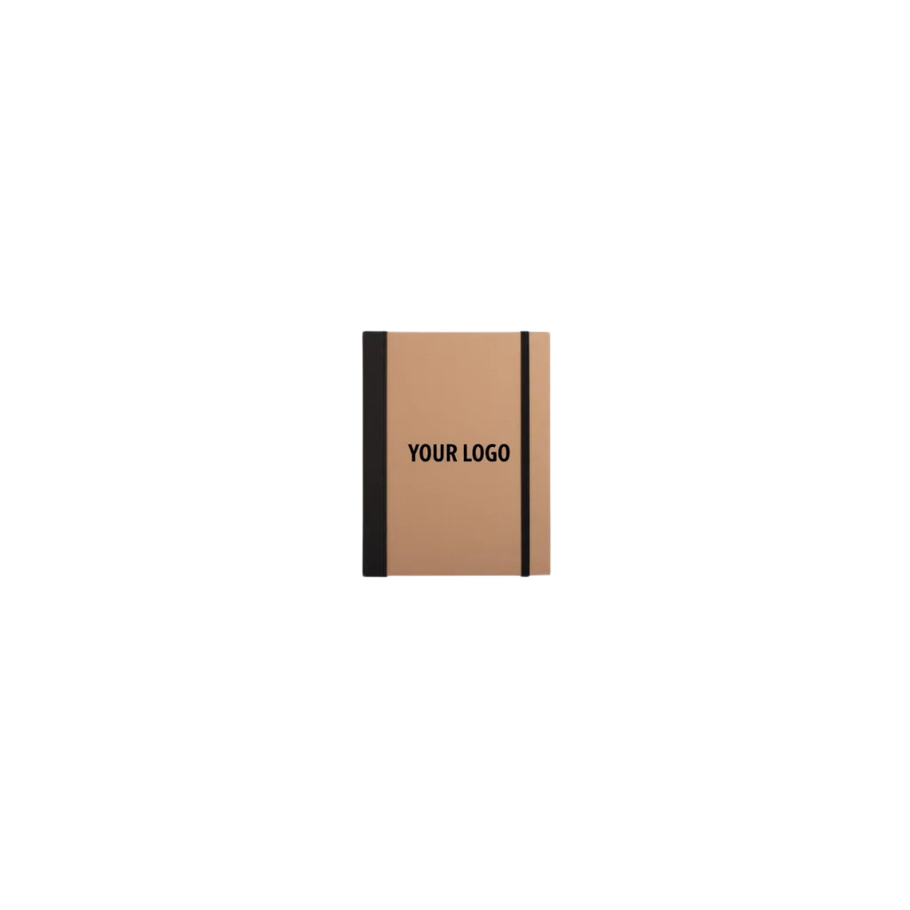
Proposed alt: Closed brown diary with sample logo area
Approval: NO
tall-cork-table-lampCORK-LT-TALL
Long: Tall cork table lamp designed for desks, bedside tables, and living spaces. Provides warm lighting with a minimal sustainable design.
Long: Tall Cork Table Lamp has a narrow upright base and cork-look shade in the primary image. The catalog lists natural cork and metal. Its vertical form differs from the hanging lamp in the same range and suits a surface where a compact light is needed. Confirm electrical rating, bulb requirements and dimensions before ordering.
Meta: Tall cork-and-metal table lamp with an upright base and cork-look shade. Ask for dimensions and electrical details before ordering.
.webp)
Proposed alt: Tall table lamp with cork-look shade and narrow base
Approval: NO
cork-desktop-calendarCORK-CAL-001
Long: Sustainable cork desktop calendar designed for eco-friendly desk organization and professional office use.
Long: Cork Desktop Calendar displays date blocks in a low cork-look base. The catalog lists natural cork and paper, and the image shows the date display beside other desk accessories. It can sit within an office welcome kit or on a reception desk. Check whether replacement date pieces are supplied before promising long-term use.
Meta: Desktop calendar with date blocks and a cork-look base. Recorded materials are cork and paper; confirm included pieces.
.webp)
Proposed alt: Cork-look desk calendar with date and weekday blocks
Approval: NO
olive-cork-table-matCORK-SD-OLIVE
Long: Eco-friendly olive-colored cork table mat designed for modern dining tables and sustainable décor. Adds warmth, protection, and style to everyday dining spaces.
Long: Olive Cork Table Mat has a darker olive and cork-patterned appearance than the plain dining mat. The image shows it beneath a place setting, while the catalog records natural cork. It can add a distinct finish to a dining or hospitality table. The dimensions are not recorded, so confirm the intended coverage before ordering.
Meta: Olive-toned cork table mat shown under a place setting. Compare its finish with the plain cork mat and confirm dimensions.
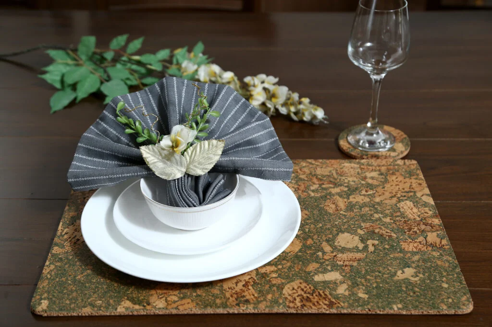
Proposed alt: Olive and cork-patterned table mat beneath a place setting
Approval: NO
cork-hanging-lampCORK-LT-HANGING
Long: Premium cork hanging lamp offering ambient lighting for modern interiors. Ideal for dining areas, cafés, offices, and sustainable architectural spaces.
Long: Cork Hanging Lamp is pictured with a tapered cork-look shade hanging from a cord. The record lists natural cork and metal, distinguishing its suspended format from the table lamp. Consider the hanging height and intended room before an interior order. Electrical rating, bulb type and dimensions still need supplier confirmation.
Meta: Suspended lamp with tapered cork-look shade and metal components. Confirm dimensions and electrical specifications before ordering.
.webp)
Proposed alt: Tapered cork-look hanging lamp suspended from a cord
Approval: NO
executive-softshell-jacketWH-M-JACKET4
Long: Wind and water-resistant softshell jacket designed for corporate environments.
Long: Executive Softshell Jacket is a dark zip-front outer layer for a team wardrobe. The database records polyester softshell, black color and sizes S through XXL; the photo shows the jacket worn with its front closed. The existing copy's wind and water resistance is not independently specified. Confirm those properties and any branding method before making performance claims.
Meta: Black polyester-softshell jacket in sizes S to XXL. Wind and water resistance require supplier confirmation.
.webp)
Proposed alt: Model wearing a black zip-front softshell jacket
Approval: NO
3-in-1-system-jacketWH-M-JACKET7
Long: 3-in-1 jacket system with removable liner for changing weather conditions.
Long: 3-in-1 System Jacket is listed with a nylon outer and fleece liner in charcoal gray, with sizes S through XXL. The primary photo shows a dark zip-front jacket, but does not demonstrate whether the liner is removable. Confirm the three configurations and attachment details before presenting it as a fully convertible system to a team buyer.
Meta: Charcoal jacket with recorded nylon outer and fleece liner, sized S to XXL. Confirm the removable-liner configuration.
.webp)
Proposed alt: Model wearing a dark zip-front jacket
Approval: NO
cork-gift-boxesCORK-GB-001
Long: Eco-friendly cork gift boxes ideal for sustainable packaging of small gifts, corporate hampers, and eco-conscious gifting solutions.
Long: Cork Gift Boxes are pictured as a rectangular open box with a matching lid. The catalog identifies natural cork and cardboard, without specifying dimensions or included contents. Use the box to present a separately selected gift only after checking its inner size and closure. The listing is for packaging, not a prefilled hamper.
Meta: Rectangular cork-look gift box with lid, recorded as cork and cardboard. Confirm inner dimensions before selecting contents.
.webp)
Proposed alt: Open rectangular cork-look gift box with matching lid
Approval: NO
cork-laptop-bagCORK-LAPTOP-001
Long: Premium eco-friendly cork laptop bag designed for professionals who value sustainability, durability, and modern style. Provides excellent laptop protection.
Long: Cork Laptop Bag has handles, a shoulder strap and a front pocket visible in the primary image. The catalog lists natural cork and fabric but gives no supported laptop size. Its carrying format may suit commuting or a work gift; confirm device fit and padding from a physical sample before promising protection.
Meta: Cork-and-fabric laptop bag with handles, shoulder strap and front pocket. Confirm laptop fit and padding before ordering.
.webp)
Proposed alt: Cork-look laptop bag with handles and shoulder strap
Approval: NO
yoga-mat-cork-fabric-evaCORK-YG-EVA
Long: Eco-friendly cork fabric yoga mat with EVA backing designed to provide superior grip, comfort, moisture resistance, and durability for daily yoga, meditation, and fitness practice.
Long: Yoga Mat Cork Fabric with EVA pairs a natural cork surface with EVA backing in a 183 × 61 cm format. The record lists yoga, meditation and fitness as intended uses. Its pictured flat cork-look surface differs from the rolled latex-backed version. For a workplace wellness or studio order, compare backing, dimensions and storage needs; confirm any branding or performance requirement separately.
Meta: Cork-surface yoga mat with recorded EVA backing, sized 183 × 61 cm. Consider it for yoga, meditation or wellness gifting.
.webp)
Proposed alt: Flat cork-look yoga mat beside a plant and metal bottle
Approval: NO
natural-cork-coastersCORK-CO-NAT
Long: Set of natural cork coasters sustainably sourced and designed for everyday use, offering reliable surface protection with eco-friendly appeal.
Long: Natural Cork Coasters are pictured as round pieces beside a cork-look container. The catalog records natural cork, but does not state how many coasters are included. Their textured surface makes them suitable for a desk, meeting table or dining setting. Confirm the set quantity and dimensions before an order or gift-pack specification.
Meta: Round natural-cork coasters pictured beside a cork-look holder. Confirm set quantity and dimensions before ordering.
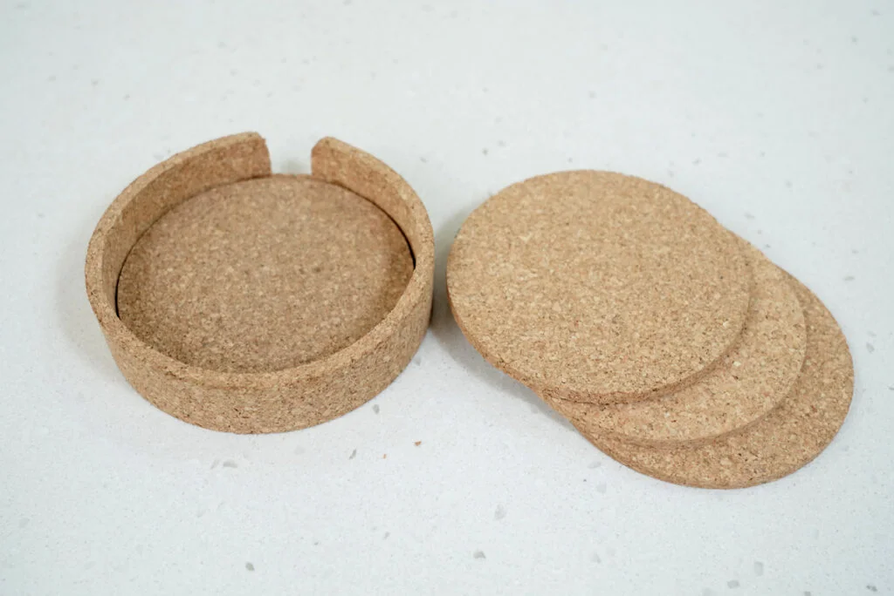
Proposed alt: Round cork coasters beside a cork-look holder
Approval: NO
fully-rubberized-3mm-yoga-matCORK-YG-RUB3MM
Long: Eco-friendly fully rubberized 3mm yoga mat offering excellent grip, lightweight design, and reliable cushioning for yoga, pilates, and fitness routines.
Long: Fully Rubberized 3 mm Yoga Mat combines the catalog's natural rubber and cork materials in a 183 × 61 cm format. The listed 3 mm thickness distinguishes this version from other yoga mats in the range. The photo shows a folded cork-look mat, but cannot prove its backing or thickness; confirm those specifications before an approved workplace wellness order.
Meta: Cork-and-rubber yoga mat recorded at 3 mm thick and 183 × 61 cm. Verify the pictured SKU and backing before ordering.
.webp)
Proposed alt: Folded cork-look yoga mat showing the textured surface
Approval: NO
premium-canvas-tote-bagTOTE-CANVAS-PREMIUM
Long: High-quality premium canvas tote bag designed for events, conferences, premium gifting, and brand promotions.
Long: Premium Canvas Tote Bag is a black, open-top carry bag with long handles in the primary image. The catalog lists canvas and a large size, without numeric dimensions or load rating. It can carry event handouts or serve as a team giveaway once the bag capacity and any logo method are confirmed.
Meta: Large black canvas tote with long handles. Confirm dimensions, capacity and any logo method for an event or team order.
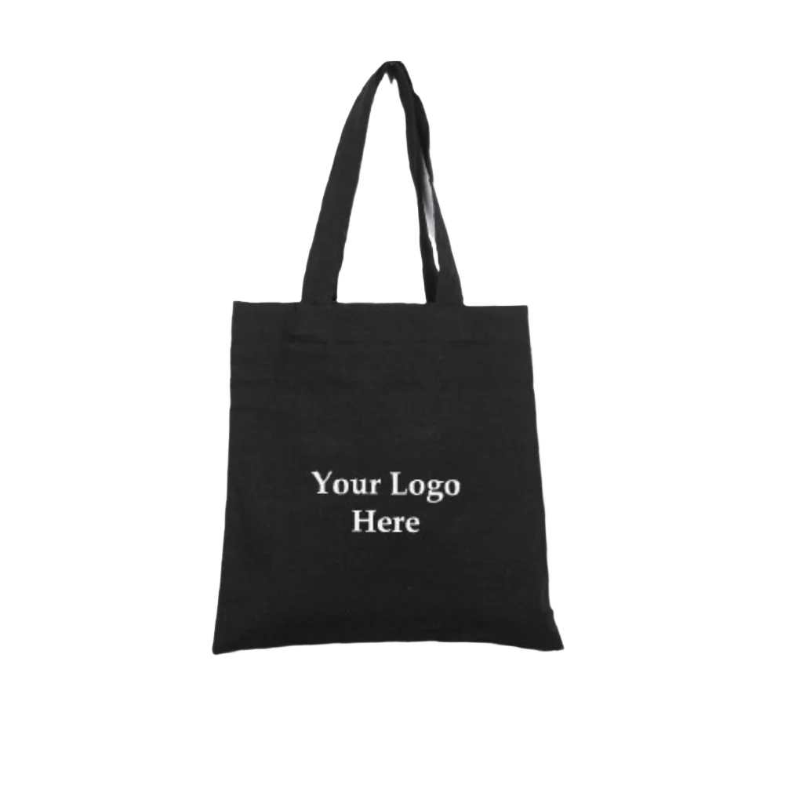
Proposed alt: Black canvas tote bag with long handles and sample logo
Approval: NO
cork-rubberized-yoga-mat-latexCORK-YG-RUB-LATEX
Long: Premium eco-friendly cork rubberized yoga mat with latex backing, engineered for superior grip, durability, sweat resistance, and high-performance yoga practice.
Long: Cork Rubberized Yoga Mat with Latex is recorded with cork, rubber and latex construction at 183 × 61 cm. The photo shows a rolled cork-look surface with a dark underside; it does not establish grip or material composition. Compare this recorded backing with the EVA mat for a wellness order, and confirm latex and any performance requirement before approval.
Meta: Cork-look yoga mat recorded with rubber and latex backing, sized 183 × 61 cm. Confirm material and performance details.
.webp)
Proposed alt: Rolled cork-look yoga mat with dark underside
Approval: NO
large-grain-cork-coastersCORK-CO-LG
Long: Premium large grain cork coasters offering a rustic and natural aesthetic. Ideal for home décor, offices, and eco-conscious users.
Long: Large Grain Cork Coasters are pictured as layered, angular pieces with a coarse cork pattern. The catalog lists natural cork but no piece count or dimensions. Their more pronounced texture distinguishes them visually from the plain round coasters. Confirm quantity and size before using the set in a dining or corporate gift specification.
Meta: Angular cork coasters with a coarse visible grain. Confirm the piece count and dimensions before ordering a set.
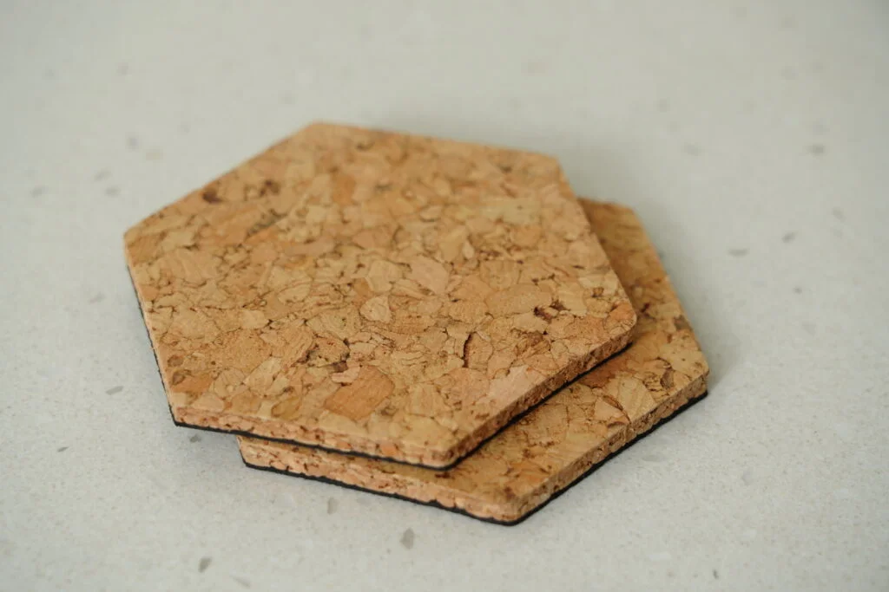
Proposed alt: Layered angular coasters with a coarse cork pattern
Approval: NO
4-piece-cork-coastersCORK-CO-4PC
Long: Set of 4 eco-friendly cork coasters ideal for protecting surfaces while adding a natural and sustainable touch to homes and offices.
Long: 4 Piece Cork Coasters is recorded as a set of four natural-cork pieces. The photo shows stacked square coasters with a textured surface, making this a different format from the round set. Their simple shape may suit a desk or hospitality table. Confirm actual dimensions and the four-piece pack before approving a bulk order.
Meta: Set of four natural-cork coasters pictured in a square format. Confirm pack quantity and dimensions before ordering.
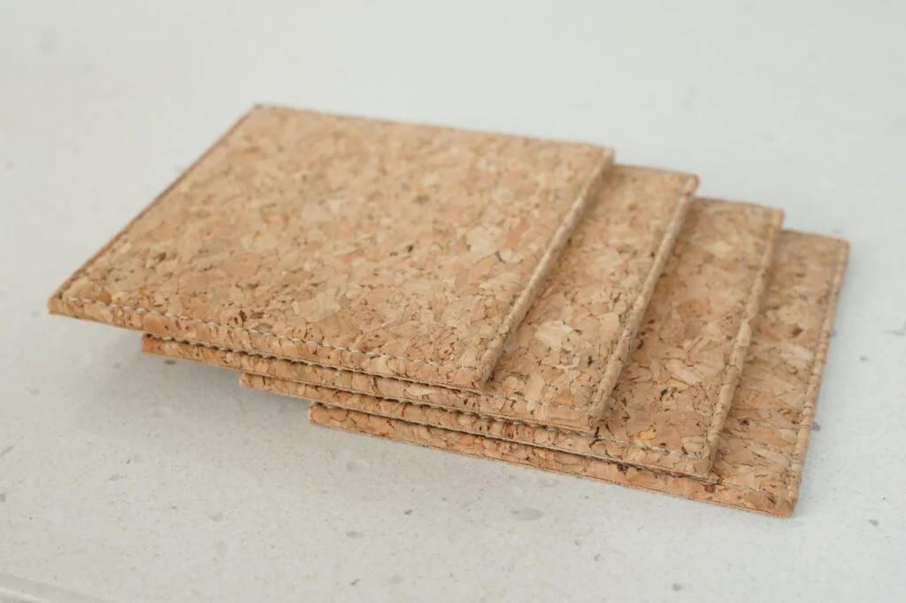
Proposed alt: Stack of square cork coasters with textured edges
Approval: NO
choco-chip-cork-planterCORK-PL-CHOC
Long: Choco chip style cork planter with a unique natural texture. Ideal for decorative planting, modern eco décor, and sustainable interior styling.
Long: Choco Chip Cork Planter is pictured as a small square pot holding a green plant. Its mixed cork texture gives it a different appearance from the round planter in the same range. The catalog lists natural cork without dimensions or drainage details. Check the opening and care requirements before ordering it for a desk gift.
Meta: Square cork planter with a speckled finish. Confirm opening size and drainage before selecting it for desk gifting.
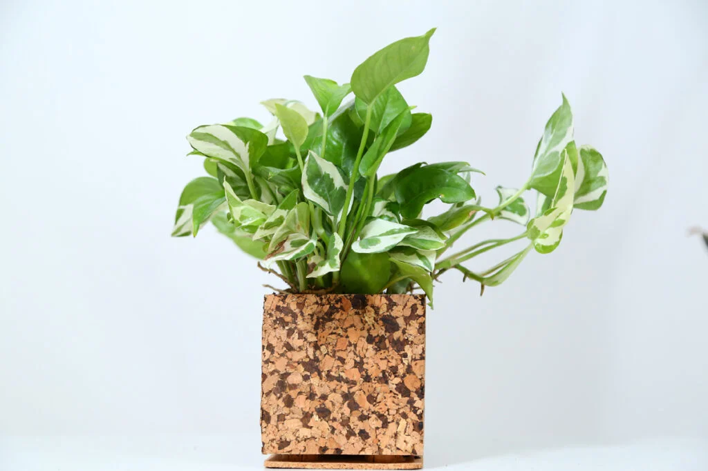
Proposed alt: Square speckled cork planter holding a green plant
Approval: NO
cork-multicolored-planterCORK-PL-MULTI
Long: Eco-friendly multicolored cork planter designed for indoor plants and decorative spaces. Crafted from natural cork, it adds a vibrant yet sustainable touch to homes, offices, cafés, and eco-conscious interiors.
Long: Cork Multicolored Planter is shown in patterned containers with contrasting colors. The catalog identifies natural cork but does not specify whether one or both pictured containers are supplied. Its decorative finish makes it distinct from the plain round planter. Confirm the sold quantity and size before using it in an office or hospitality display plan.
Meta: Patterned cork-look planter pictured in two designs. Confirm the sold quantity and dimensions before ordering.
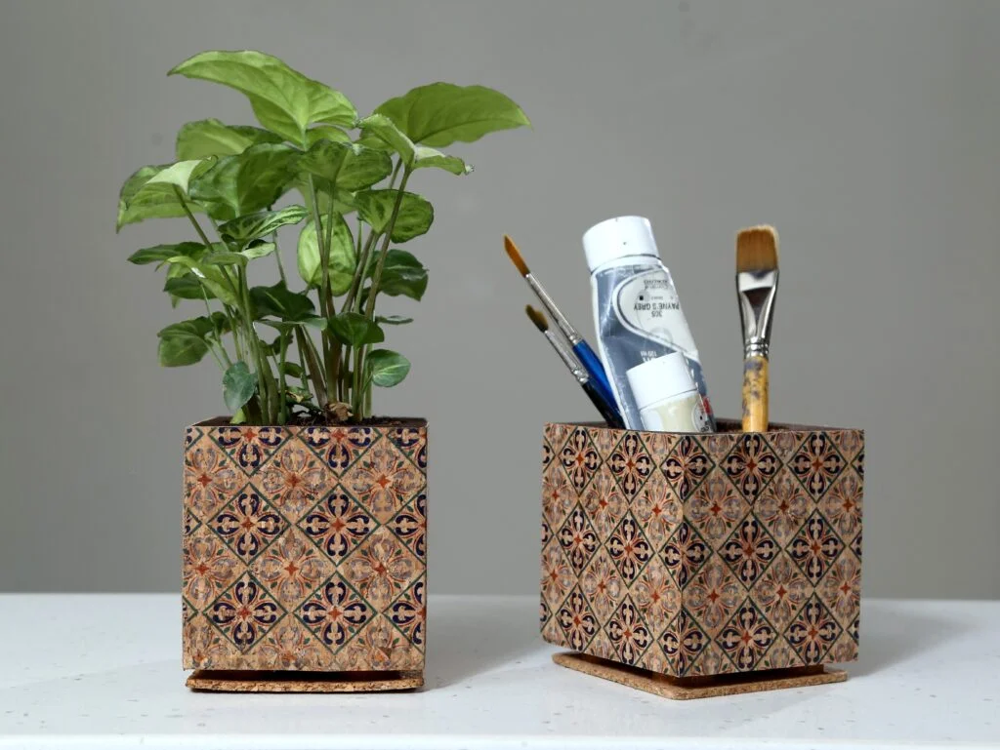
Proposed alt: Two patterned cork-look planters holding plants and brushes
Approval: NO
cork-round-planterCORK-PL-ROUND
Long: Minimal and elegant round cork planter designed for small indoor plants. A perfect sustainable décor element for homes, workspaces, cafés, and eco-friendly interiors.
Long: Cork Round Planter is pictured as a low circular container holding a fern. The catalog records natural cork and gives no size or drainage specification. Its round shape can fit a desk or windowsill where a compact plant is wanted. Confirm the actual opening and water-care instructions before including it in a gift set.
Meta: Low round cork planter pictured with a fern. Confirm opening dimensions and drainage details before ordering.
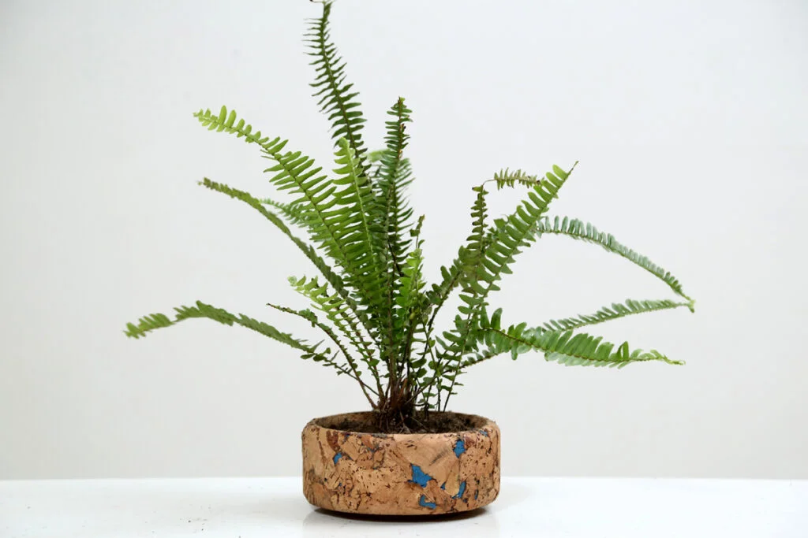
Proposed alt: Low round cork planter holding a green fern
Approval: NO
ergonomic-professional-mouseERGONOMIC-MOUSE-PRO
Long: Ergonomic professional mouse designed for long office hours, IT teams, designers, and health-conscious workplaces.
Long: Ergonomic Professional Mouse is shown as a black, curved computer mouse with a scroll wheel and side contour. The catalog records ABS and silicone grip with a standard size. It could suit a desk setup or employee technology kit; confirm its connection type and hand orientation before making compatibility or comfort promises.
Meta: Black contoured computer mouse with recorded ABS and silicone grip. Confirm connection type before ordering for a desk kit.
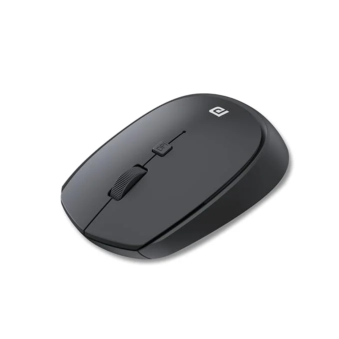
Proposed alt: Black contoured computer mouse with scroll wheel
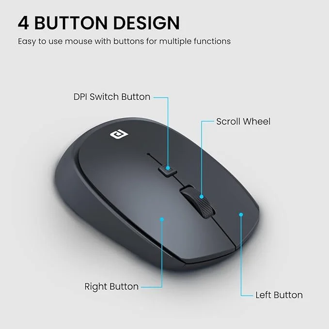
Proposed alt: Black mouse graphic showing four-button layout
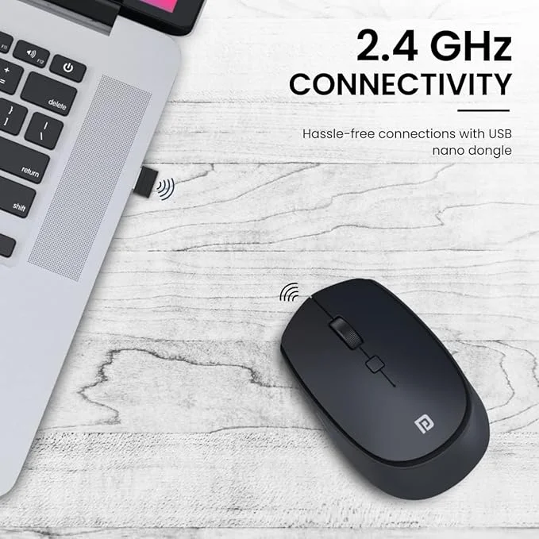
Proposed alt: Black mouse beside a laptop on a desk
Approval: NO
cork-round-style-pen-holderCORK-PEN-002
Long: Stylish round cork pen holder designed for sustainable desk organization in offices, workspaces, and eco-friendly environments.
Long: Cork Round Style Pen Holder is pictured as a cylindrical container holding pens and brushes. The catalog records natural cork without dimensions or compartment details. Its upright opening can keep writing tools together on an office desk. Check capacity and the sold quantity before planning a group welcome kit.
Meta: Cylindrical cork pen holder shown with pens and brushes. Confirm size and sold quantity for an office kit.
.webp)
Proposed alt: Cylindrical cork-look pen holder holding pens and brushes
Approval: NO